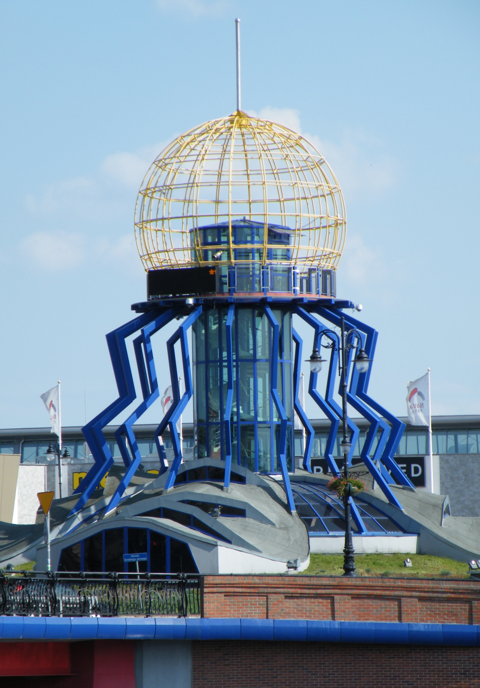
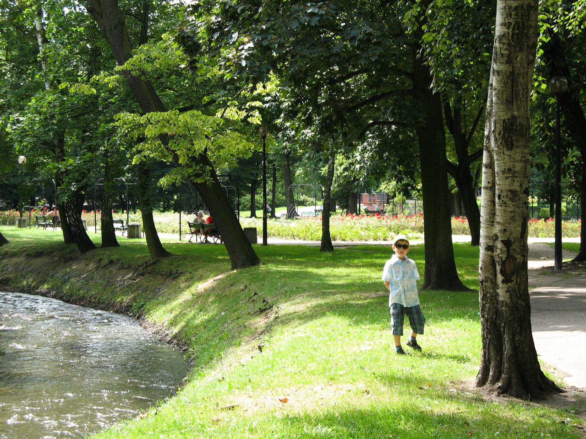
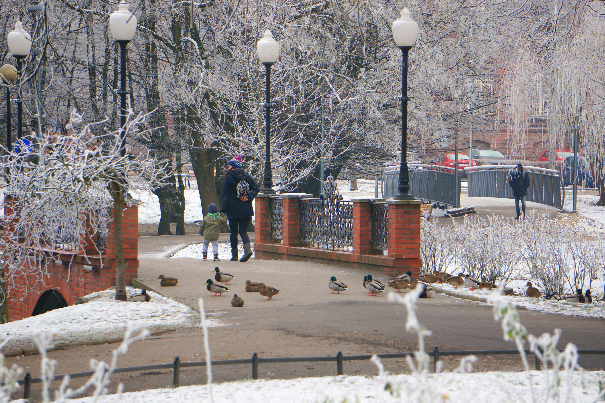
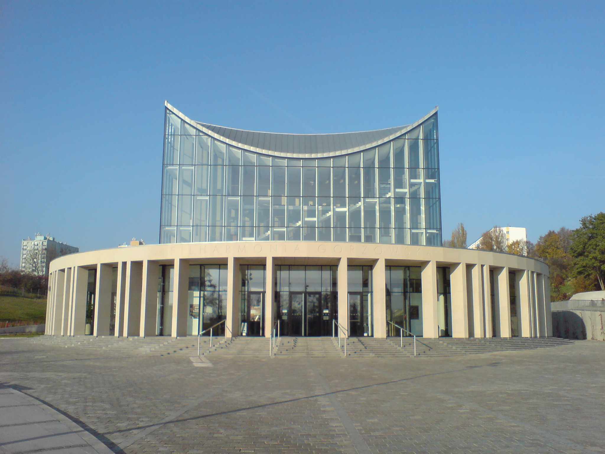
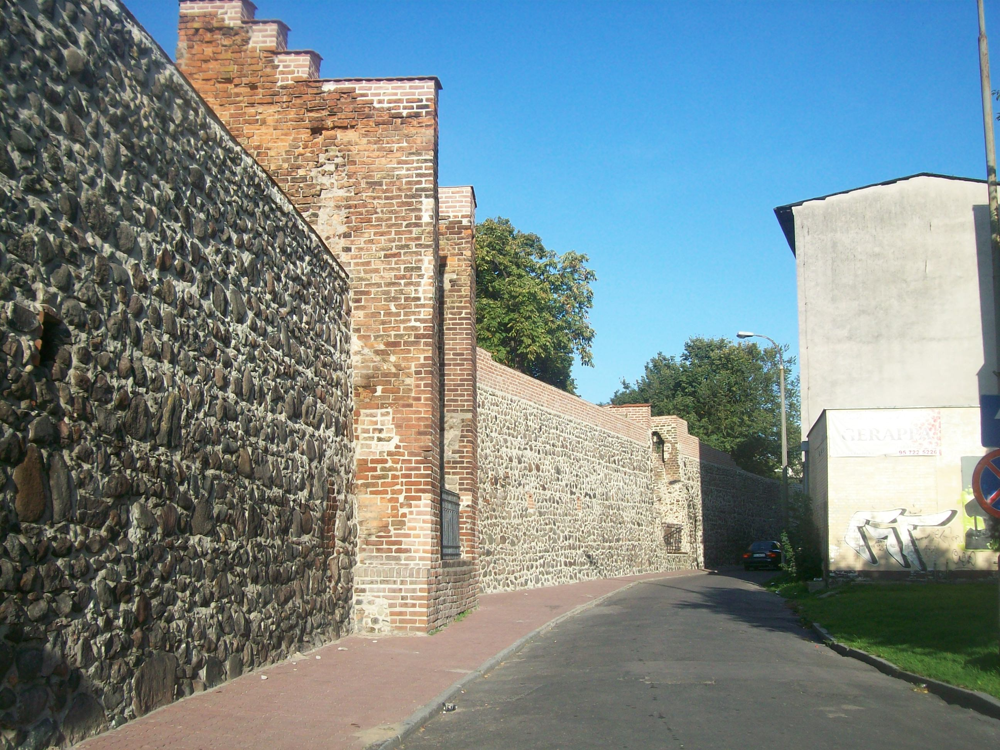
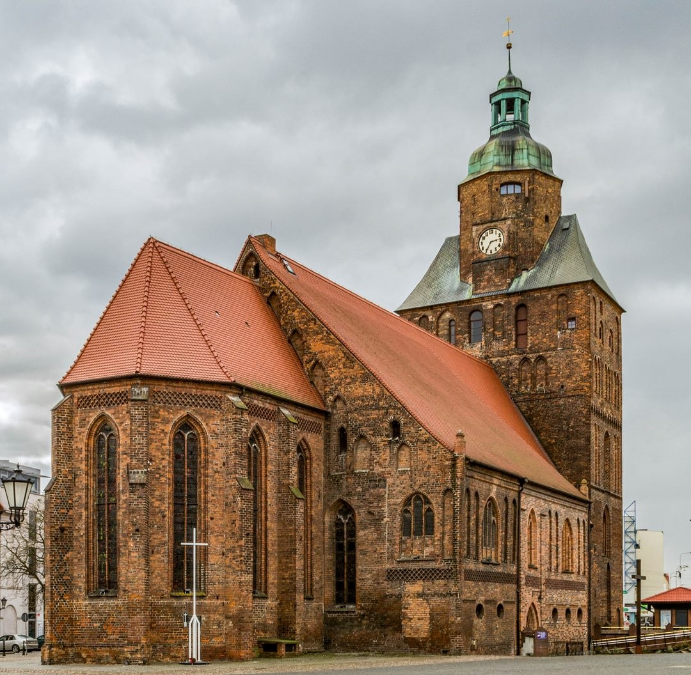

a
Gorzów Wielkopolski
-miasto nad WartąCiekawe miejsca
Bulwar Nadwarciański
- Nadrzeczny bulwar w Gorzowie Wielkopolskim, ciągnący się na prawym brzegu Warty.Autorstwa Bartłomiej Nowosielski - http://www.gorzow.pl/PL/drukuj/3235/3606/Bulwar_walczy_o_miano___cudu_Polski/wersja/, CC BY-SA 4.0, https://commons.wikimedia.org/w/index.php?curid=100041883
Wieża widokowa "Dominanta"
Autorstwa Flyz1 - Praca własna, CC BY-SA 4.0, https://commons.wikimedia.org/w/index.php?curid=27844493
Park Wiosny Ludów
Park o powierzchni 4,7 ha, położony w centrum Gorzowa Wielkopolskiego. Założony w 1913 r. na podmokłych terenach wokół stawu. W okresie międzywojennym i krótko po wojnie mieściło się tu zoo. W latach 1960-1964 park przeszedł gruntowną modernizację i renowację. Przez gorzowian zwany jest często "parkiem róż", z racji tego, iż niegdyś rosła w nim duża liczba tych kwiatów. Obecnie park stanowi enklawę zieleni w centrum miasta. Są tu alejki, ścieżki spacerowe, plac zabaw dla dzieci, teren jest oświetlony wieczorem. Po godzinie 23 park jest zamykany.
 Autorstwa Oskierro - Praca własna, CC BY-SA 4.0,
https://commons.wikimedia.org/w/index.php?curid=100035482
Autorstwa Stiopa - Praca własna, CC BY-SA 4.0,
https://commons.wikimedia.org/w/index.php?curid=76342938
Studnia Czarownic
Studnia ta upamiętnia spalenie trzech kobiet posądzonych o czary. Jest to replika pierwszej studni, autorstwa gorzowskiej artystki Zofii Bilińskiej, która została zniszczona podczas II Wojny Światowej.
Był to wiek XVI– niechlubny czas, kiedy w całej Europie, w tym i w Polsce, trwało ” polowanie na Czarownice” i dotyczyło przede wszystkim kobiet. Wtedy wystarczyło zwykłe posądzenie o czary i konszachty z Diabłem, a dana osoba, po krótkim procesie w Sądzie bywała skazywana na śmierć przez spalenie na stosie. W trakcie przesłuchań te biedne kobiety były poddawane torturom tak wymyślnym, że każda przyznawała się do wszystkiego o co ją posądzono. Tak też się stało z trzema córkami biednej wdowy z Gorzowa Wlk. Dziewczyny te słynęły w okolicy z urody, wiec nie dziwota, że wpadły w oko bardzo bogatemu gospodarzowi z sąsiedniej wsi. I wszystko może by było w porządku, gdyby nie fakt, że był on tak sędziwy wiekiem. Żadna z młodych dziewczyn go nie chciała, więc obrażony mężczyzna postanowił rzucić na nie posądzenie o czary.
A potem słychać było tylko straszliwy krzyk matki palonych dziewcząt, bo one same nie wydały żadnego jęku. Biedna matka, by połączyć się z córkami, skoczyła do studni stojącej na dziedzińcu Ratusza.
Od tego czasu studnię tą zaczęto nazywać „Studnią Czarownic”. Legenda mówiła, że jak długo się do niej zagląda, to można zobaczyć 3 piękne twarze smutnych, młodych kobiet.
http://czasatrakcji.pl/uploads/pictures/a7c2000cf2011b91a4a13b76dda87b9ca31bf65e.jpg
Filharmonia Gorzowska
Miejska instytucja kultury. Jej gmach położony jest w centrum Gorzowa Wielkopolskiego. Do imprez cyklicznych organizowanych przez Filharmonię należy m.in. cykl niedzielnych koncertów familijnych. W 2017 roku w organizowanych przez Filharmonię koncertach udział wzięło 39 000 osób
Autorstwa Crash override83 - Praca własna, CC BY-SA 3.0, https://commons.wikimedia.org/w/index.php?curid=17258291
Mury obronne
Gorzowskie mury obronne to zachowany do czasów obecnych fragment średniowiecznych obwarowań o długości 130,19 m i średniej wysokości 4,5 m. W odrestaurowanym fragmencie można zobaczyć cztery oryginalne baszty łupinowe, wysunięte do przodu przed linię murów i mające formę prostokątów.
Katedra pw. Wniebowzięcia Najświętszej Maryi Panny
Najstarsza świątynia w mieście, wzniesiona jako miejski kościół parafialny pod koniec XIII w. na planie pseudobazylikowego korpusu trzynawowego z wieżą przy elewacji zachodniej oraz zakrystią w kształcie prostokąta przy elewacji północnej.
Autorstwa Michał i Renia - https://przekraczajacgranice.pl/2016/04/12/gorzow-wielkopolski/, CC BY-SA 4.0, https://commons.wikimedia.org/w/index.php?curid=102367727